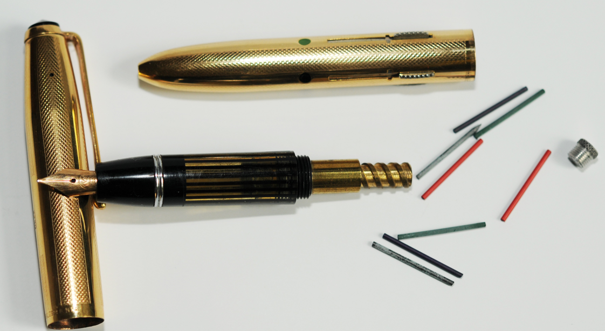
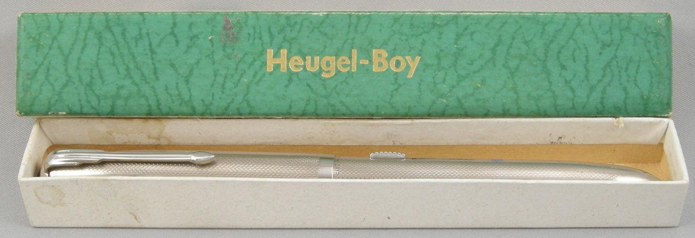
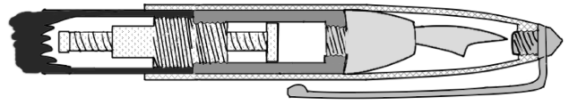
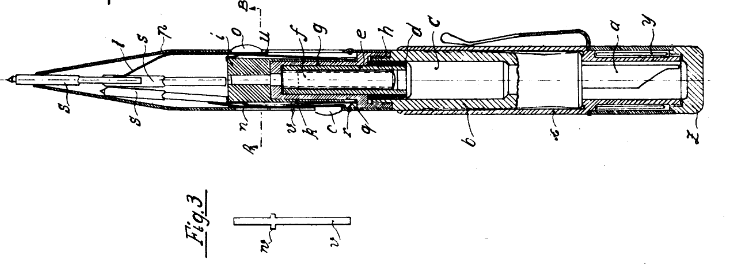
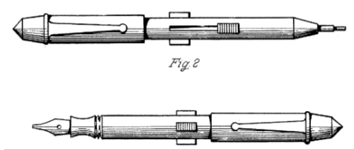

Heugel
Füllfederhalter und Vierfarbstift
Stand: 30.05.2026
Die Adolf Heugel Metallwarenfabrik aus Pforzheim stellte in den 1950er Jahren eine außergewöhnliche Kombination aus Füllfederhalter und Vierfarb-Buntstift her.
Der Stift ist das Resultat aus Heugels Patent DE882046 und Erwin Küblers Patent DE808419.
Die Fabrik hat Adolf Heugel möglicherweise von Friedrich Heugel (Vater?) übernommen. Vor dem Krieg stand sie 1939 in der Adolf-Hitler-Allee 32.


Die Mantelhülse besteht aus Silber oder mit Gold bewalztem Metall.
Der Füllerteil besteht aus schwarzem Kunststoff, wobei das Tintenreservoir transparent gestreift ist, um Blick auf den Tintenfüllstand zu haben.
Die silberne Version hieß "Heugel-Boy"

Der Füllermechanismus ist ein Kolbenfüller.
Der Vierfarbmechanismus ist ein damals häufiger Schiebermechanismus, bei dem jede Miniaturdrehführung mit einer Blattfeder nach außen an den Führungsschlitz gepresst wird und in einer orthogonal verlaufenden Ausnehmung axial unbeweglich gehalten wird. Drückt man den jeweiligen Schieber herunter, lässt sich der Minenhalter mit jenem vorschieben.
Der Vorschub der Buntstiftmine selbst verfolgt wie bei allen Miniaturdrehführungen (siehe hier).
Für das Buntstiftminen-Reservoir fand man die schlaue Lösung, diese im Kolben selbst zu lagern.
Steckt die Kappe fest?
Hier ist der Aufbau zur Reparatur. Die Kappe ist NICHT geschraubt, sondern gesteckt.Hitze funktioniert zum Lösen.

Patent
Erwin Kübler aus Stuttgart meldete 1949 DE808419 an. Zu diesem verweist Adolf Heugel in seinem Patent. Anders als Heugel wendet er den dem Heugel identischen Blattfeder-Mehrfarbmechanismus an.Ganz identisch ist Küblers Patent aber noch nicht: Er legte das Minenreservoir nicht im Kolben, sondern in der Abdeckkappe an.

Die Verlegung des Minenbehälters nimmt Heugel dann 1951 mit DE882046 vor. Vom Minenhaltermechanismus entfernt Heugel allerdings die Blattfedern und verändert auch die Schieberknöpfe.

Gemeinsam haben die beiden Stifte, dass sie als Kolbenfüller ausgelegt sind und das Ziel haben, den Durchmesser und die Länge zu minimieren. Deshalb legen beide den Mehrfarbmechanismus rund um den Kolben an.
Laut Kübler (1949) sei noch keine brauchbar Kombination eines Mehrfarbstifts und Füllfederhalter bekannt geworden, weil die genannten Probleme bisher bestanden.
Abschließend kann gesagt werden, dass der Heugel von Adolf Heugel Eigenschaften seines eigenen Patents mit denen von Erwin Kübler kombiniert.
Ob wohl eine Abmachung getroffen wurde?